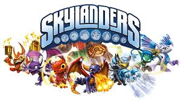

Skylanders was a game created when activion got the rights to the Spyro franchie. The first game Skylanders Spyro Adventure was realease in October 12, 2011. Hit the market and it was a complet sucess. Bringing in millions of dallors for Actvion. This game also intudce us to the Toys to Life. By placing the toy on the protal of power. The toy was brought to life in the game.
